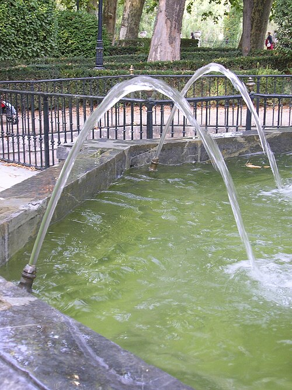

Lesson 2: Relating the Standard & Vertex Forms: Completing the Square

You need the highest point. This time you only have the expanded writing.
y = -x² + 6x - 5
Do not sketch a careful graph yet. What about this writing makes the peak hard to name?
Standard form makes the y-intercept easy to see. Vertex form makes the turning point easy to see.
You are handed only standard form. Which writing would make the vertex readable?
Same curve, both ways
Expand, then complete the square. Same graph?
Expand, then complete the square.
f(x) = 3(x − 1)² + 4
Shared points
Do the two writings sit on one curve?
See the square first
Name the side and the leftover. Algebra comes next.
Name the side and the leftover.
f(x) = x² + 6x + 5
x² + 6x + 5
What in the picture is the side? What is the leftover?
Match the algebra
Write vertex form for the same function.
Write vertex form for the same function.
f(x) = x² + 6x + 5
How does the writing match the side and the leftover?
Your turn
Same steps. New numbers.
Same steps. New numbers.
f(x) = x² + 2x − 3
How do you read h from the brackets?
When a is not 1
Factor a from the x terms first.
Factor a from the x terms first.
f(x) = −3x² − 6x − 1
If a stayed 1, what inside the brackets would go wrong?
A simple fraction
Same steps. Half of 1/2 is a fraction.
Same steps. Half of 1/2 is a fraction.
f(x) = x² + (1/2)x + 1
Which step matched the integer cases?
Check the graph
Complete the square, then overlay.
Complete the square, then overlay.
f(x) = 2x² − 8x + 3
Shared points
Do both writings give the same outputs?
Sketch key features
Vertex, axis, max or min. Not a list of intervals.
Vertex, axis, max or min.
f(x) = x² − 8x + 12
How did completing the square make the vertex readable?
Try another: which sketch plan?
Choose factoring or completing the square. One reason each. No formula.
Choose factoring or completing the square.
A. f(x) = x² − 5x + 6
B. g(x) = x² + 4x + 7
What feature made each choice a fit?
On paper: expand and complete the square on the shared model, then check a few table points on one sketch.
Key idea
Completing the square rewrites ax² + bx + c as a(x - h)² + k. The graph does not move.
Need to know
- See the square and leftover before the algebra when you can.
- When a is not 1, factor a from the x² and x terms first.
- A simple rational b/a uses the same steps.
- Plus inside the brackets still means h is negative.
Back to the stream. You still have only the expanded writing.
y = -x² + 6x - 5
Do not move the board yet.
Do not move the board yet.
y = −x² + 6x − 5
How did completing the square name the high point?
OpenStax Intermediate Algebra 2e, CC BY-NC-SA 4.0
Ontario curriculum sample: Queen’s Printer for Ontario
Water arc photo: GuidoB, CC BY-SA 3.0